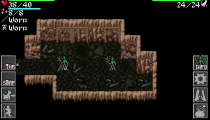
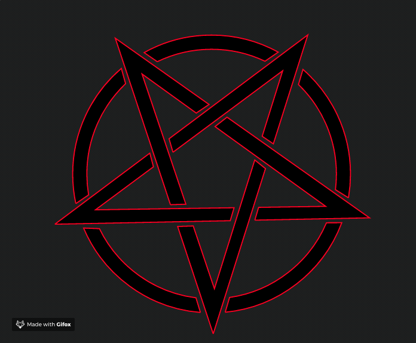
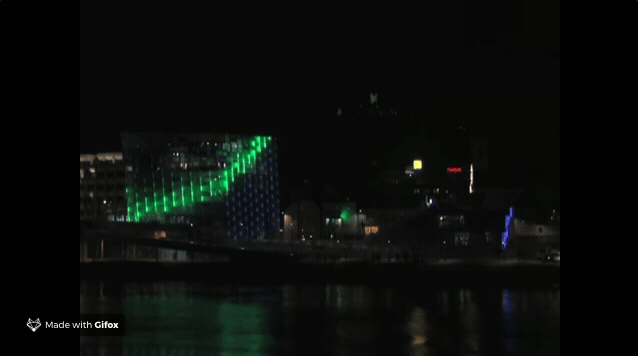

Code & Art
New Frontiers
Curated by Raven Eyex
WTH is Art anyway?
WTH is Art anyway?
Del latín ars, y este del griego téchnē [τέχνη].
The principles or methods employed in making something or attaining an objective.
WTH is Art anyway?
Any human activity or product made with an aesthetic and/or communicative purpose through which ideas, emotions, concepts -or in general: worldviews- are expressed through the use of diverse resources and means
Merriam-Webster / Oxford
Code as the Medium
Code is used to create the Artwork but the code itself is not the artwork
Video Games
Computer Animation

Computer Animation
Video Mapping
Experimental/Conceptual
Code as the Artwork
Code is used to create the Artwork and the code itself is part of
Machine-Made Art
The Artwork is created by an Algorithm, Robot or AI
The process isn't subject to strict guidance
The aesthetic desitions are made by the Machine.
The Open Question
SapienceDue Credit
- Raven Bird: source
- Art History Collage by Samantha Duquette
- Code Wallpaper: source
- Ananias Game: Graphics by Juan David Camacho: source
- Modeled Dinos: public domain image
- Mighty Octopus by Ana Tudor
- Baphomet by >H.R. Giger
- Pentagram Flip by Raven Eyex
- CFP Bauer Mapping by Gabrielle Ricci
- Lights On Mapping by Zach Lieberman
- The Rhythm of City by Varvara Guljajeva & Mar Canet